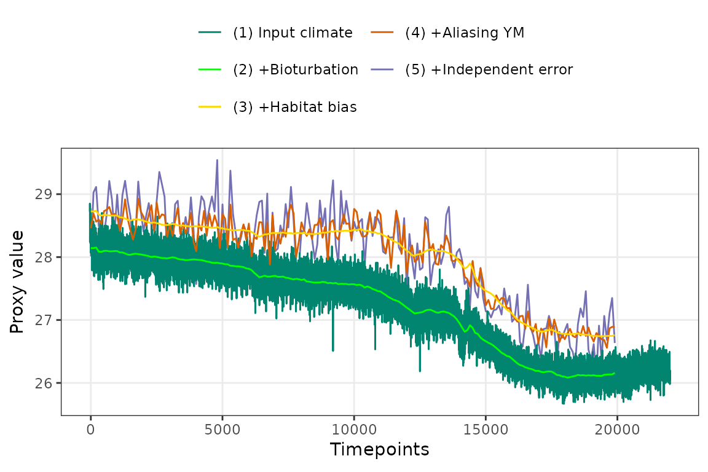
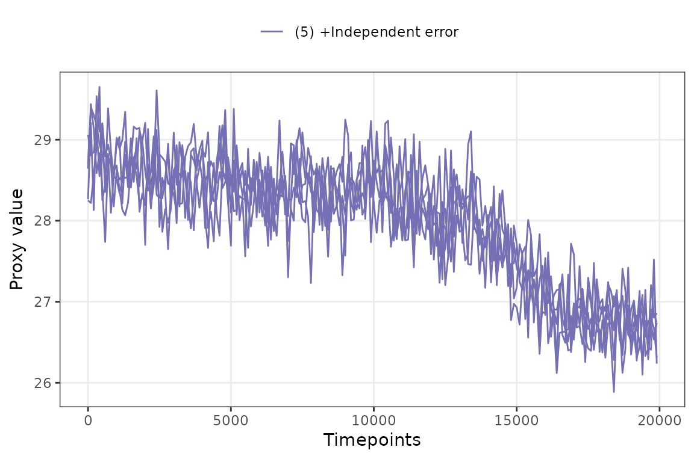
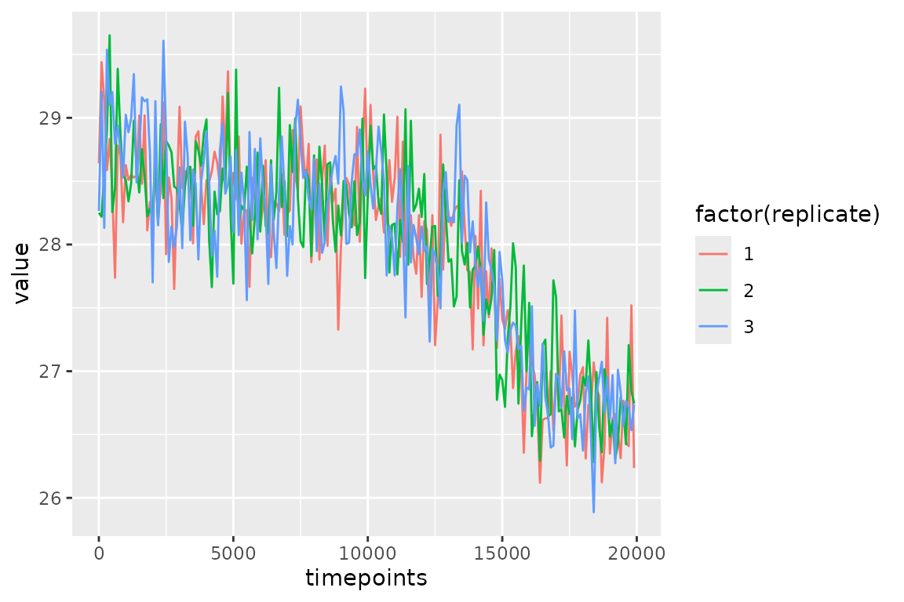
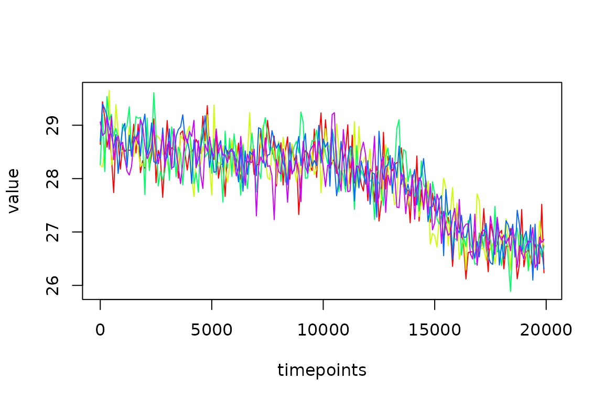

Introduction to sedproxy
Andrew M. Dolman
2022-03-28
introduction-to-sedproxy.RmdWhat is a “proxy forward model” and what is “sedproxy”?
A proxy forward model is a numerical model that takes a hypothetical “true” climate time-series and simulates the processes of proxy creation and retrieval. The output is a simulated proxy time-series that should resemble what a true proxy would look like given our assumed true climate.
sedproxy is an R package that implements a forward model for climate proxies archived in marine sediments. The model is described in Dolman, A. M. and Laepple, T.: Sedproxy: a forward model for sediment-archived climate proxies, Climate of the Past, 14(12), 1851–1868, doi:https://doi.org/10.5194/cp-14-1851-2018, 2018.
The tutorial is intended to get you started using sedproxy and to illustrate some of its possible applications.
Setup - installing sedproxy
sedproxy can be installed directly from github. Remove the comments marks “#” on the code below to install. If you are doing this tutorial on the RStudio Cloud sedproxy is already installed.
# if (!require("devtools")) {
# install.packages("devtools")
# }
#
# devtools::install_github("EarthSystemDiagnostics/sedproxy")The input climate
The main function in the sedproxy package is ClimToProxyClim for Climate-To-Proxy-Climate, and its first argument is clim.signal. This is the “assumed true” past climate from which a proxy record will be modelled. This could be the output from a GCM, ESM, or a simple stochastic time series.
It should be a matrix with rows corresponding to years - with the most recent year at the top, going back in time as you go down the matrix (as if it were a sediment column!). In this example the columns of the matrix represent months of the year, but more generally the columns can also represent “habitats” such as different depths in the ocean at which the proxy creation process might take place.
The sedproxy package contains an example input climate taken from the Trace21k climate model run. It is the closest model grid box to core MD97-2141, from which there is a foraminiferal Mg/Ca record (record 41 in Shakun et al. 2012, Rosenthal et al., 2003).
The model data are in “time-forward” order so we need to reverse the order when we read it, and convert to °C from Kelvin.
knitr::opts_chunk$set(echo=TRUE, message = FALSE, warning = FALSE,
fig.width = 6, fig.height = 4)
clim.in <- N41.t21k.climate[nrow(N41.t21k.climate):1,] - 273.15Additionally we need to turn it into an R time-series object. The Trace simulation runs to the year 1990 AD, therefore the start time for the input climate is -39 years BP.
clim.in <- ts(clim.in, start = -39)Timepoints
The second argument timepoint defines the points in time for which you want to model a proxy value. If you have a real proxy record you can use the estimated ages of your actual samples. Here we will define a regular time-series with a sample every 100 years.
Because of the bioturbation process, the modelled proxy value at each timepoint depends on values of the input climate both earlier and later in time than the timepoint itself. This time windows spans from 1 “bioturbation width” younger than the timepoint, and 3 bioturbation widths earlier in time. If timepoints are requested that cannot be returned, the model will still run, but with a warning that some timepoints have been omitted.
req.timepoints <- seq(1, 20000, by = 100)Habitat weights
habitat.weights define the relative abundance or flux of climate signal carriers (e.g. foraminiferal shells) corresponding to the habitats (here months) in the different columns of the input climate. For example, a particular taxa might be more abundant in the warm summer months than during the winter.
Sediment properties
The bioturbation depth bio.depth and sedimentation rate sed.acc.rate control the amount of smoothing that takes place due to mixing of the sediment. For most marine sediment cores we do not currently have a measured estimate of the bioturbation depth. As a default we use a value of 10 cm as this is close to the mean observed for locations where this has been measured by particle tracers. The sedimentation rate can be estimated from a set of down-core depths and age estimates. For this example we will use a sedimentation rate of 10 cm / kyr as together with a sediment slice thickness (called layer.width in sedproxy) this implies a sampling interval of 100 years.
Additional error terms
The sedproxy forward model simulates measurement error as a simple normal/Gaussian distributed random variable, the argument sigma.meas sets the standard deviation of this error. Here we set it to 0.25 °C
Additionally, inter-individual error is modelled as a normally distributed error term, sigma.ind, here set to 1 °C. The argument n.samples controls the number of signal carriers (e.g. forams) measured together in a single sample. The inter-individual error is scaled by the square root of n.samples as a mean is effectively taken over this number of individuals, here 30.
Running the proxy forward model
PFM <- ClimToProxyClim(clim.signal = clim.in,
timepoints = req.timepoints,
habitat.weights = hab.wts,
sed.acc.rate = 50,
sigma.meas = 0.25,
sigma.ind = 1,
n.samples = 30,
# this controls the resolution at which the input climate
# is returned and will be plotted later
plot.sig.res = 1)There is a plotting function that by default plots all of the modelled stages of proxy creation.
PlotPFMs(PFM)
If we repeat the call to ClimToProxyClim with n.replicates > 1 we will get multiple realisations of the simulated proxy.
PFM.5.reps <- ClimToProxyClim(clim.signal = clim.in,
timepoints = req.timepoints,
habitat.weights = hab.wts,
sed.acc.rate = 50,
sigma.meas = 0.25,
sigma.ind = 1,
n.samples = 30,
plot.sig.res = 1,
n.replicates = 5)We can plot just the final simulated proxy records.

But they are hard to distinguish, so we will extract the results and make our own custom plot. The output is a list.
attributes(PFM.5.reps)## $names
## [1] "simulated.proxy" "smoothed.signal" "everything" "calibration.pars"
##
## $class
## [1] "sedproxy.pfm"
is.list(PFM.5.reps)## [1] TRUEThe first element is a dataframe/tibble with only the first replicate. The second is a smoothed version of the climate signal. The poorly named element “everything” is what we want, this contains all the replicate simulated proxies in a large long format dataframe/tibble.
PFM.5.reps$everything## # A tibble: 28,839 × 7
## timepoints n.samples replicate stage value scale label
## <dbl> <dbl> <dbl> <chr> <dbl> <chr> <chr>
## 1 1 30 1 proxy.bt.sb.sampY 28.7 Proxy units (4) +Alia…
## 2 101 30 1 proxy.bt.sb.sampY 28.8 Proxy units (4) +Alia…
## 3 201 30 1 proxy.bt.sb.sampY 28.7 Proxy units (4) +Alia…
## 4 301 30 1 proxy.bt.sb.sampY 28.7 Proxy units (4) +Alia…
## 5 401 30 1 proxy.bt.sb.sampY 28.7 Proxy units (4) +Alia…
## 6 501 30 1 proxy.bt.sb.sampY 28.7 Proxy units (4) +Alia…
## 7 601 30 1 proxy.bt.sb.sampY 28.7 Proxy units (4) +Alia…
## 8 701 30 1 proxy.bt.sb.sampY 28.6 Proxy units (4) +Alia…
## 9 801 30 1 proxy.bt.sb.sampY 28.6 Proxy units (4) +Alia…
## 10 901 30 1 proxy.bt.sb.sampY 28.7 Proxy units (4) +Alia…
## # … with 28,829 more rows
PFM.5.reps$everything %>%
filter(stage == "simulated.proxy",
replicate <= 3) %>%
ggplot(aes(x = timepoints, y = value, colour = factor(replicate))) +
geom_line()
With base R
reps <- subset(PFM.5.reps$everything, stage == "simulated.proxy")
plot(value~timepoints,
col = replicate,
type = "n",
data = reps)
n.reps <- length(unique(reps$replicate))
colrs <- rainbow(n.reps)
for (i in seq_along(unique(reps$replicate))){
lines(value~timepoints,
col = colrs[i],
data = reps[reps$replicate == i,])
}
Influence of sample sizes
Here we use sedproxy to examine the influence of the number of forams per sample and the number of samples measured per depth/timepoint/sediment slice.
pfm.30 <- ClimToProxyClim(
clim.signal = clim.in,
timepoints = req.timepoints,
#calibration.type = "MgCa",
sed.acc.rate = 50,
habitat.weights = hab.wts,
sigma.meas = 0.26, sigma.ind = 2,
n.samples = 30,
n.replicates = 300)
pfm.5 <- ClimToProxyClim(
clim.signal = clim.in,
timepoints = req.timepoints,
#calibration.type = "MgCa",
sed.acc.rate = 50,
habitat.weights = hab.wts,
sigma.meas = 0.26, sigma.ind = 2,
n.samples = 5,
n.replicates = 300)
# Here we take a shortcut. Instead of actually simulating the measurement of 6 samples at each timepoint we just shrink sigma.meas by sqrt(6) and multiply the number of forams by 6.
pfm.5x6 <- ClimToProxyClim(
clim.signal = clim.in,
timepoints = req.timepoints,
#calibration.type = "MgCa",
sed.acc.rate = 50,
habitat.weights = hab.wts,
sigma.meas = 0.26 / sqrt(6),
sigma.ind = 2, n.samples = 6*5,
n.replicates = 300)
pfm.120 <- ClimToProxyClim(
clim.signal = clim.in,
timepoints = req.timepoints,
#calibration.type = "MgCa",
sed.acc.rate = 50,
habitat.weights = hab.wts,
sigma.meas = 0.26,
sigma.ind = 2, n.samples = 120,
n.replicates = 300)
pfm.10x12 <- ClimToProxyClim(
clim.signal = clim.in,
timepoints = req.timepoints,
#calibration.type = "MgCa",
sed.acc.rate = 50,
habitat.weights = hab.wts,
sigma.meas = 0.26 / sqrt(10),
sigma.ind = 2, n.samples = 10*12,
n.replicates = 300)Combine the three different measurement strategies and plot.
combined.pfms <- bind_rows(`5 forams` = pfm.5$everything,
`30 forams` = pfm.30$everything,
#`6*5 forams` = pfm.5x6$everything,
`120 forams` = pfm.120$everything,
`10x12 forams` = pfm.10x12$everything,
.id = "measurement.strategy") %>%
mutate(measurement.strategy =
factor(measurement.strategy,
ordered = TRUE,
levels = c("5 forams", "30 forams", "120 forams", "10x12 forams")))
combined.pfms %>%
filter(stage %in% c("simulated.proxy")) %>%
ggplot(aes(x = timepoints, y = value, group = factor(replicate))) +
geom_line(alpha = 0.01) +
facet_wrap(~measurement.strategy)Summarise the error
We can take the mean and standard deviation across replicates for each timepoint and plot this instead.
mean.error <- combined.pfms %>%
group_by(stage, timepoints, measurement.strategy) %>%
summarise(mean = mean(value),
sd = sd(value))
mean.error %>%
filter(stage %in% c("simulated.proxy")) %>%
ggplot(aes(x = timepoints, y = mean)) +
geom_line() +
geom_ribbon(aes(ymax = mean + sd, ymin = mean - sd),
alpha = 0.2, colour = NA) +
facet_wrap(~measurement.strategy) +
theme_bw()And finally we can summarise the error for each measurement strategy.
mean.error %>%
filter(stage %in% "simulated.proxy") %>%
group_by(stage, measurement.strategy) %>%
summarise(mean.error = mean(sd)) %>%
knitr::kable()| stage | measurement.strategy | mean.error |
|---|---|---|
| simulated.proxy | 5 forams | 1.0444357 |
| simulated.proxy | 30 forams | 0.4872122 |
| simulated.proxy | 120 forams | 0.3317448 |
| simulated.proxy | 10x12 forams | 0.2220948 |
Cited literature
Dolman, A. M. and Laepple, T.: Sedproxy: a forward model for sediment-archived climate proxies, Climate of the Past, 14(12), 1851–1868, doi:https://doi.org/10.5194/cp-14-1851-2018, 2018.
Rosenthal, Y., Oppo, D. W. and Linsley, B. K.: The amplitude and phasing of climate change during the last deglaciation in the Sulu Sea, western equatorial Pacific, Geophys. Res. Lett., 30(8), 1428, doi:10.1029/2002GL016612, 2003.
Shakun, J. D., Clark, P. U., He, F., Marcott, S. A., Mix, A. C., Liu, Z., Otto-Bliesner, B., Schmittner, A. and Bard, E.: Global warming preceded by increasing carbon dioxide concentrations during the last deglaciation, Nature, 484(7392), 49–54, doi:10.1038/nature10915, 2012.